RUNBIRD ／ AI動画事業
ヒアリングシートと初回打ち合わせの録音をもとに、「こういう動画になります」を先に見てもらうため、 ほぼ完成形の状態まで作ってあります。現在は静止画をつないだアニマティック（Ken Burnsでゆっくり動かした状態）で、 ナレーション・BGMはまだ載せていません。実際の動画化（Lovart）はこれから行います。
2026-09-18 更新：正式な打ち合わせ議事録・全文文字起こしを受領し、動画スタイル（アニメ系＋阿蘇ブルーベリーオーシャンファーム型のテレビCM風プロモーションムービー）が横田さん明示合意で完全確定しました。 あわせて家族シーンにカクレクマノミ（ニモ本体）が抜けていた点を修正、実際のAquaMareロゴ（アニメ版に再構成）を着地シーンに反映しました。
2026-09-18 追加更新（v4）：店内シーンを実物の店舗写真7枚を参照して再生成しました。 初回モックは店内背景を文字指示だけで生成していたため汎用的な熱帯魚店イメージになっていましたが、実際のAquaMare店内（白いキャビネット什器・ブルーLED照明の水槽列・木目調フローリング・天井の配線レール・Red Sea等の商品陳列）を画像参照として反映し直しました（S1・S5・S6・S7・S8・S10・S12の7カット）。
⚠️ クライアントへはまだ送付できません。 ①尺・ナレーション・BGMの正式希望が未確認（現状仮置き） ②横田さんの顔写真・ホワイトボード講義風景・個人宅設置・店舗外装の4点が未着（受領済みは店内水槽7枚のみ。AquaMareロゴ・Tシャツは完成済みと判明したためロゴのみ先行反映） の点が残っています。社内の方向性確認用としてご覧ください。
50.6秒 ／ 1920×1080 ／ 音声なし（アニマティック）
冒頭は水槽の光を「ぼやけた状態から一気にピントが合う」演出で始めます。 これは鈴木さんが指定した「ART AQUARIUM MUSEUM GINZA×TOOBOEコラボCM」の冒頭手法を参考にしたもので、 見た目のモチーフ（金魚・提灯）はAquaMare本来の店内（サンゴ・海水魚水槽）に差し替えています。
ダウンロード| # | 秒 | 映像 | テロップ |
|---|---|---|---|
| S1 | 0:00-0:03 | 水槽の光がぼやけた状態から一気にピントが合う（人物なし） | — |
| S2 | 0:03-0:07 | 単身男性30代、一人部屋でスマホを見る | 一人の時間、なんだか物足りない |
| S3 | 0:07-0:10 | 父親が困り顔、息子はスマホに夢中、母親は奥に | 子どもと何を一緒に楽しもう |
| S4 | 0:10-0:13 | （追加）専門学校の実習室、ホワイトボードで20代の学生に講義する横田さん | 専門学校で講師も務める、確かな知識 |
| S5 | 0:13-0:17 | AquaMare店内、横田さんが水槽の前で控えめに案内 | 専門知識で、はじめての一歩を全力サポート |
| S6 | 0:17-0:21 | 単身男性が店内で水草水槽（カージナルテトラ等）を眺める | 一人でも、じっくり楽しめる趣味に |
| S7 | 0:21-0:25 | 家族3人が海水魚水槽（イソギンチャク・カクレクマノミ・ナンヨウハギ）を見て息子が指差す | 家族みんなで夢中になれる |
| S8 | 0:25-0:28 | 50代後半夫婦が3秒登場、リーフタンク（キイロハギ） | — |
| S9 | 0:28-0:32 | 横田さんが個人宅で水槽メンテナンス | 設置からメンテナンスまで、 解決するまでずっと伴走 |
| S10 | 0:32-0:36 | （修正）単身男性が休日に来店し、スマホで自宅水槽を横田さんに見せる（対面・来店シーン） | 「今こんな感じなんだよ」がうれしい時間 |
| S11 | 0:36-0:39 | 3カット畳みかけ：家族／単身男性／夫婦 | にぎやかに／自分だけの趣味に／会話が増えました、 旦那が留守の日も |
| S12 | 0:39-0:42.6 | 店内引きの全景 | — |
| S12b | 0:42.6-0:45.6 | （実ロゴ反映）実際のAquaMareロゴ（アニメ版）へフェードイン | —（ロゴ画像そのもの） |
| S13 | 0:45.6-0:50.6 | エンドカード | AquaMare／instagram: @aquamare_japan 北海道札幌市中央区南2条西24丁目2-17 カワムラビル 1階 090-3116-5765／営業時間はInstagramでご確認ください |
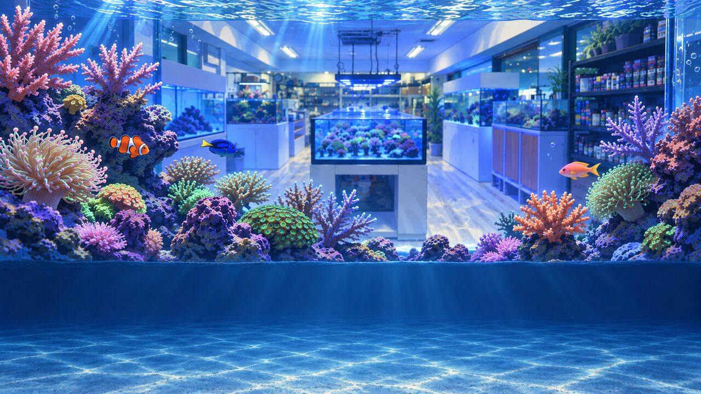
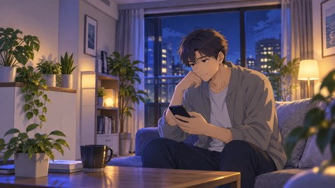
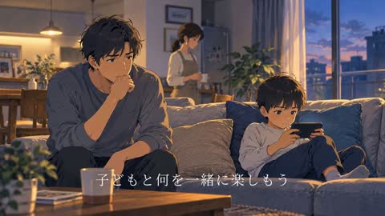
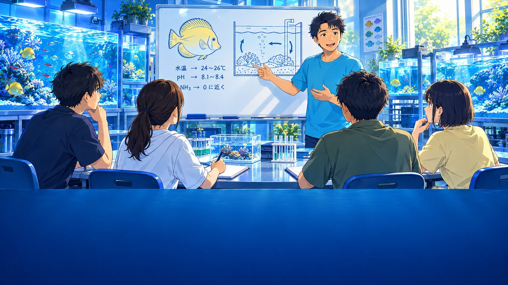
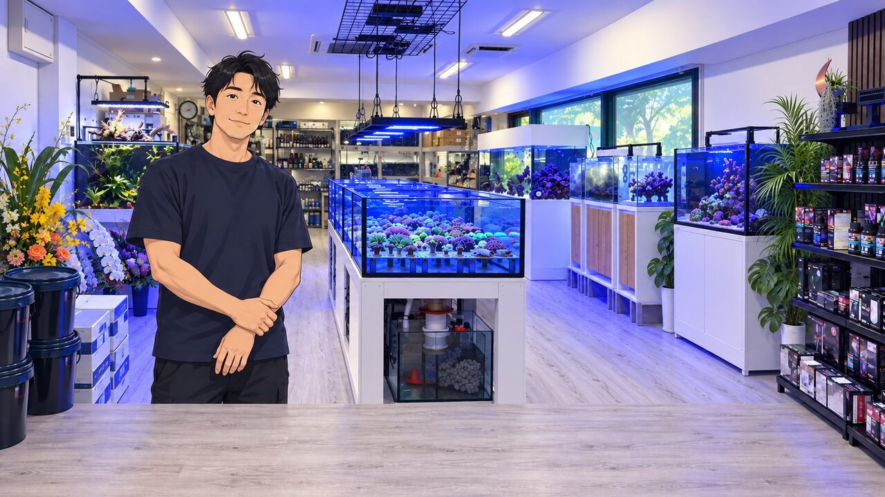
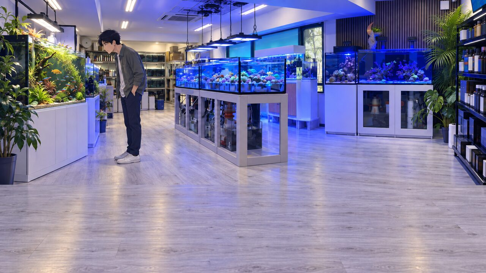
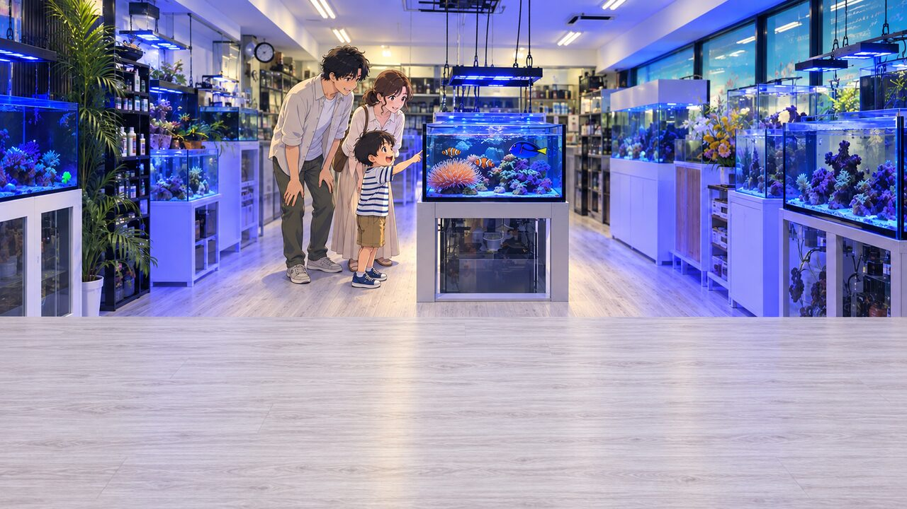
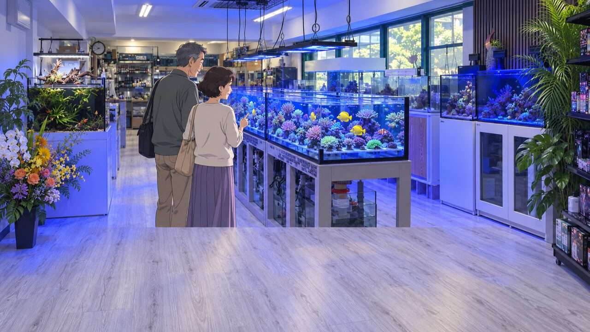
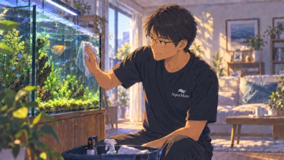
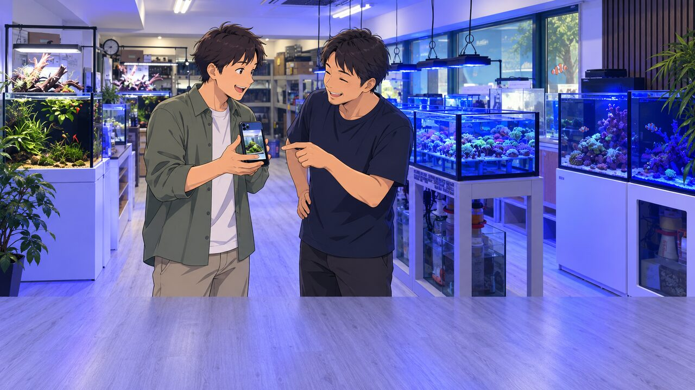
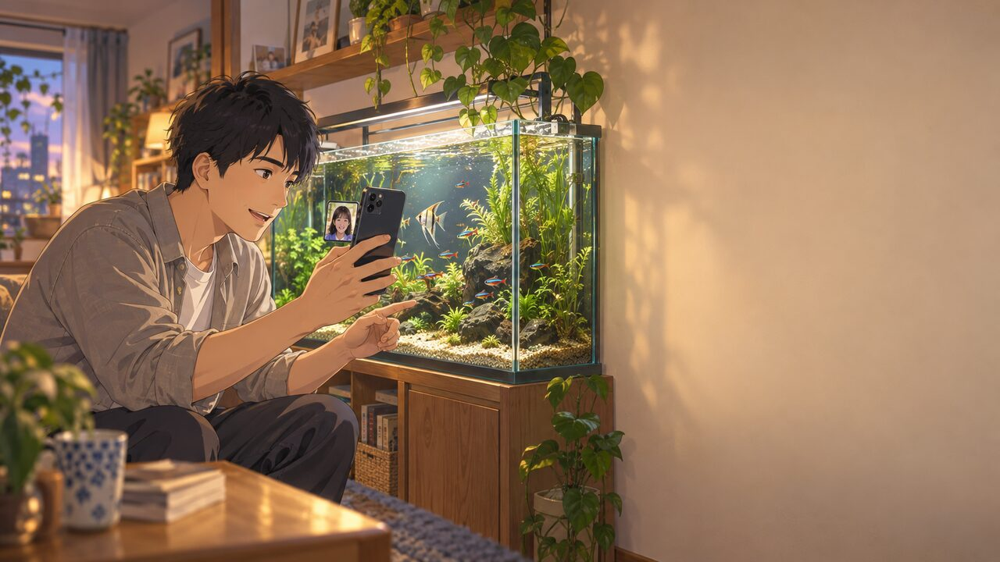
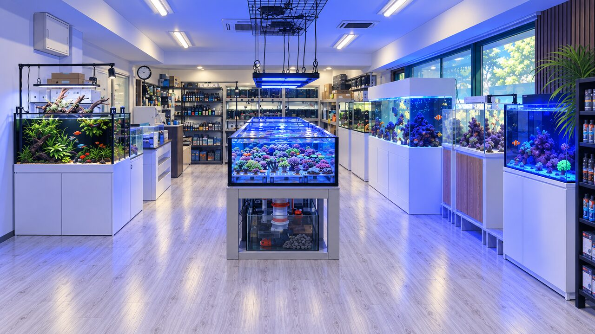
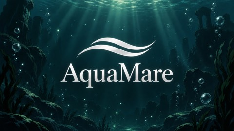
業態が直接通じるもの（熱帯魚・サンゴ・アクアリウム関連の実在CM）を優先し、 サムネイルの実サイズで生存確認しています。
ART AQUARIUM MUSEUM アートアクアリウム美術館 / YouTubeで見る （生存確認済み）
鈴木さん最優先指定。「冒頭がすごく印象深い、一番いい」とのフィードバックを受け、 「ぼやけた状態から急に鮮明な画が現れる」冒頭の技法だけをS1フックに移植しました（モチーフの金魚・提灯は使わず、AquaMare実店舗のサンゴ・海水魚水槽で表現）。
MITSUKOSHI 三越 公式チャンネル / YouTubeで見る （生存確認済み）
同美術館の紹介映像。水槽演出・照明のトーンの参考として分析しました。
新海誠／コミックス・ウェーブ・フィルム / YouTubeで見る （生存確認済み）
ヒアリングシート指定の「アニメ風（新海誠風）」の絵作り参考。水・光の透明感の演出をシーン画像に反映しています。
| 指摘 | 初回モックの状態 | 対応 |
|---|---|---|
| 専門学校でホワイトボードを使い学生に教えているシーン | 12シーン構成に漏れていた | S4として新規追加 |
| 単身男性のシーン | 「自宅からビデオ通話で遠隔サポート」と誤設計 | 「休日に来店してスマホで対面で見せる」に修正（S10） |
| 家族シーンの魚種 | キイロハギを誤使用 | ナンヨウハギ（ドリー配色）に修正 |
| 夫婦シーンの魚種 | 魚種の明記なし | キイロハギを明示 |
| 老夫婦「旦那が留守でも世話をしている」ニュアンス | テロップに未反映 | S11のテロップに追記 |
| 参考動画 | 汎用的な新海誠風CMのみ | 鈴木さん指定のART AQUARIUM MUSEUM GINZA×TOOBOEを最優先参考に追加 |
| 家族シーンのカクレクマノミ（ニモ本体） | ナンヨウハギ・イソギンチャクのみで抜けていた | 正式文字起こしで必須と判明（S7画像を再生成） |
| 動画スタイル（アニメ vs テレビCM風） | 粗い文字起こしでは確定できず要確認扱い | 正式文字起こしで横田さん明示合意を確認。完全確定 |
| ロゴ | テキストのみの仮ロゴ | 実際のAquaMareロゴをアニメ版に再構成して反映 |
| Tシャツ | 「現在のポロシャツで仮出演」の想定だった | 実際はAquaMareロゴ入りTシャツが既に完成済みと判明 |
横田さんから今後LINEでいただく予定の写真（打ち合わせ議事録より）：
①ホワイトボードで学生に講義している様子 ②個人宅でのメンテナンス・設置の様子 ③店舗の内装・外装写真（内装は受領済み7枚で代替、外装は未着）
その他仮置き：尺（正式合意なし、現状45〜51秒で仮置き）／ナレーション有無・声質（落ち着いた女性ナレーションで仮置き）／BGMイメージ（水・自然を感じる穏やかなトーンで仮置き）
✅ 確定済み（2026-09-18 正式文字起こしで解消）：動画スタイルはアニメ系＋阿蘇ブルーベリーオーシャンファーム型のテレビCM風プロモーションムービーで横田さん明示合意。AquaMareロゴ・Tシャツは既に完成済み（ロゴは今回のモックに反映、Tシャツは着用写真の到着待ち）。
| ゲート | 結果 |
|---|---|
/fact-check（正本 facts.json との機械照合） | ブロッカー0（住所の「北海道」抜け・「1F」表記ゆれを検出→台本・動画とも修正済み） |
/telop-check（テロップの機械チェック＋目視二重確認） | ブロッカー0。機械の指摘15→12件は原寸目視で全てOCRの誤読（水槽テクスチャ・図解内の文字）と確認。独立目視（Gate3）でS12ロゴ抜け・カットの動きの弱さを発見し修正済み |
| 目視（制作側・二重） | 店主の手の破綻／メンテナンスシーンの手の破綻／店内全景の画風不一致 の3点を発見し再生成、いずれも解消確認済み |
/video-check・/video-qa-relay | 未実施。クライアントへ出す段になったら、別環境の別AIによる独立チェックを通します |